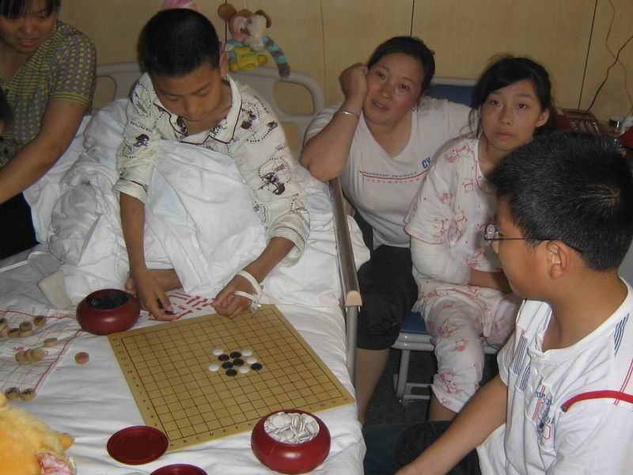
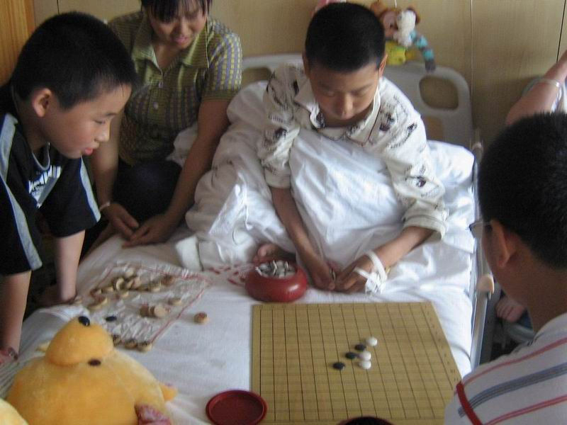

从灾区来的小棋手
#1 从灾区来的小棋手作者：黄药师 发表时间：2008-6-14 11:21:10
12岁的龙顺红和13岁的曾永红是绵竹市汉旺镇五都小学六年级同班同学，在这次5.12地震中，小顺红永远的失去了他的右腿，小永红的右手被碎石砸断，然而心灵的创伤远比身体所受伤害更大，转到南通第二人民医院进行康复治疗以后，两个原本应该享受童年快乐的孩子变得不怎么说话，小永红更是担心自己无法复原而伤心哭泣。唐闸小学的师生们在得知这个情况以后，迅速组织人员前往看望。除了安排学校骨干力量给两个学生补习功课以外，学校少先队大队部先后多次组织少先队员前往医院看望小顺红和小永红，抚慰他们受伤的心灵。在得知两个孩子喜欢下棋，大队辅导员顾老师带上学校五子棋兴趣组的小队员们和小顺红、小永红切磋交流。原本平静的病房顿时传来一阵阵欢声笑语，在小顺红和小永红脸上看到了久违的笑容。虽然棋盘两边的孩子来自不同的地方，但是他们同属于一片蓝天，一起享受着五子棋带来的快乐。
最后，顾老师代表兴趣组的全体队员赠送了一副五子棋以及棋盘给小顺红和小永红，并祝愿他们早日康复。


相关资料：绵竹市汉旺镇武都小学营救大行动
#2 Re:从灾区来的小棋手作者：非鸟 发表时间：2008-6-14 14:04:34
希望他们渐渐好起来啊门......#3 Re:从灾区来的小棋手作者：闫荣辉 发表时间：2008-6-14 19:21:46
祝福他们能早日健康!#4 Re:从灾区来的小棋手作者：励精 发表时间：2008-6-15 1:26:27
心连心，手牵手，连珠未来的希望。
#5 Re:从灾区来的小棋手作者：雅匪 发表时间：2008-6-16 12:05:23
快乐安全的活着，到老！#6 Re:从灾区来的小棋手作者：汪洋孤舟 发表时间：2008-6-17 1:05:29
小棋手？？？？？？？？？？#7 Re:从灾区来的小棋手作者：五子酷 发表时间：2008-6-17 8:02:15
为五子棋而感动！~
#8 Re:从灾区来的小棋手作者：孤傲 发表时间：2008-6-17 15:38:57
报告领导,我也是灾区人民,不过不是小朋友而是大朋友,嘻嘻
#9 Re:从灾区来的小棋手作者：我想学棋 发表时间：2008-6-17 21:31:25
不幸中的幸运
#10 Re:从灾区来的小棋手作者：龙吟风 发表时间：2008-6-22 19:44:09
默默祝福
祖国的未来